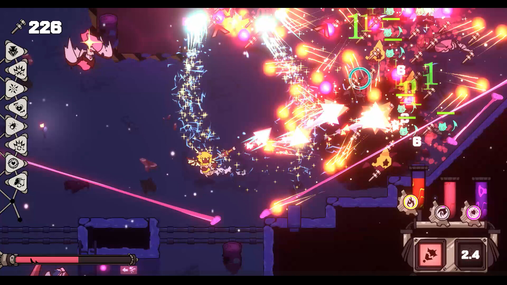
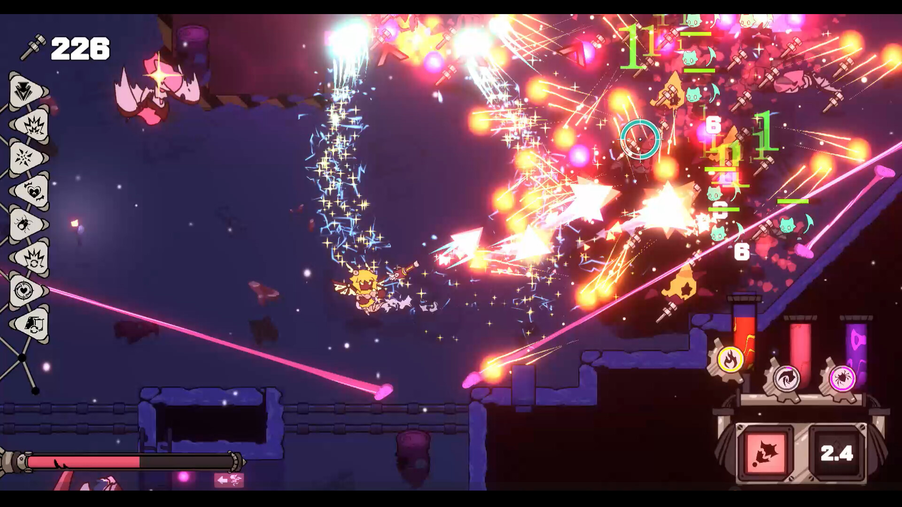
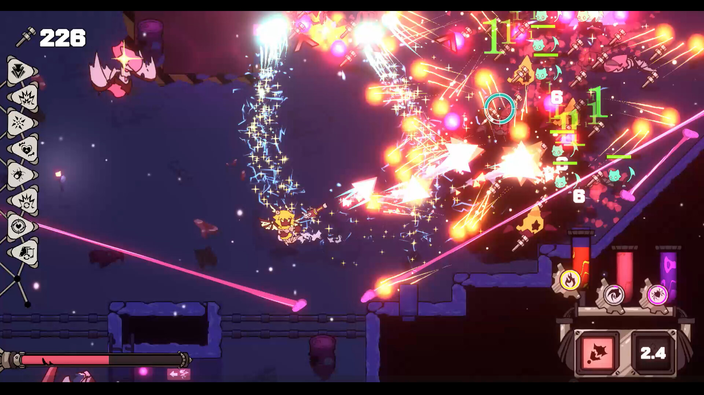

Witch Riders (2023)
More

 



Witch Riders is a multiplayer game and the goal is to use the fans to propel yourself or blow
others into traps or off the map with a big fan.
The prompt of this game is to design a game around two verbs: Skate and Blow . We went through a variety of pitches before settling on making a PVP platformer arena game with players on skateboards and giant fans. The physics and movement of the game simulate a skateboard, with no friction and being carried by your momentum, and the blow aspect was incorporated through the large fans the players carried.
The prompt of this game is to design a game around two verbs: Skate and Blow . We went through a variety of pitches before settling on making a PVP platformer arena game with players on skateboards and giant fans. The physics and movement of the game simulate a skateboard, with no friction and being carried by your momentum, and the blow aspect was incorporated through the large fans the players carried.